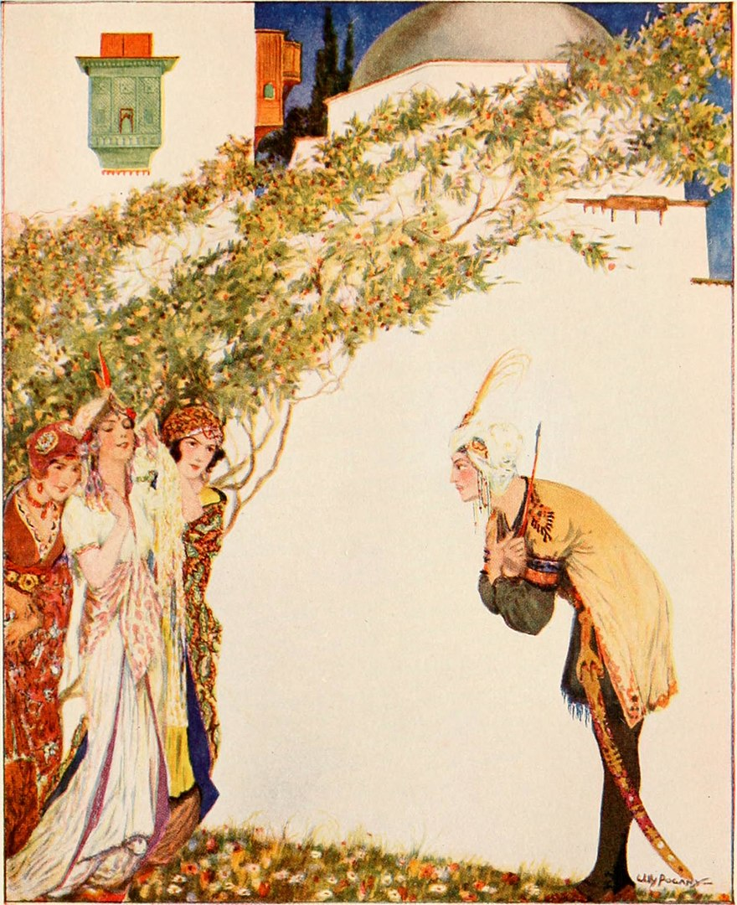
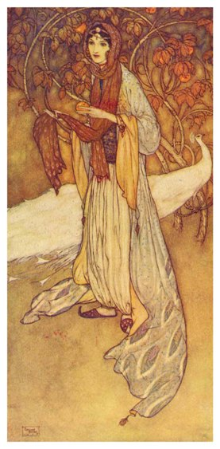
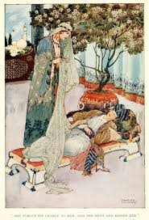

<meta charset="UTF-8">
<link rel="stylesheet" href="css/estilo1.css">
<link rel="stylesheet" href="css/libro1-estilos.css">
<link href="https://fonts.googleapis.com/css2?family=Open+Sans:wght@300;400;600;700&display=swap" rel="stylesheet">

<!-- Fragmento para inyectar en pagina.html -->
<article class="libro-detalle">

    <div class="libro-encabezado">
        <h2 class="titulo-seccion">Las mil y una noches</h2>
        <p class="libro-subtitulo">Relato: «Historia del visir Nureddin, de su hermano el visir Chamseddin y de Hassán Badreddin»</p>
    </div>

    <!-- Portada + ficha técnica -->
    <section class="libro-ficha">
        <figure class="libro-portada">
            
            <figcaption>Ilustración de portada</figcaption>
        </figure>

        <div class="libro-datos">
            <h3>Ficha del relato</h3>
            <ul>
                <li><strong>Nombre original:</strong> ألف ليلة وليلة (<em>Alf layla wa-layla</em>)</li>
                <li><strong>Nombre en español:</strong> Las mil y una noches</li>
                <li><strong>Relato:</strong> Historia del visir Nureddin, de su hermano el visir Chamseddin y de Hassán Badreddin</li>
                <li><strong>Autoría:</strong> Anónima y colectiva (recopilación de cuentos populares)</li>
                <li><strong>Época:</strong> Recopilación realizada entre los siglos VIII y XIV aproximadamente</li>
                <li><strong>Origen:</strong> Medio Oriente</li>
                <li><strong>Género:</strong> Cuento tradicional</li>
                <li><strong>Idioma original:</strong> Árabe</li>
            </ul>
        </div>
    </section>

    <!-- Audio -->
    <section class="libro-audio">
        <h3>Escucha la reseña</h3>
        <p>Conoce la historia de Nureddin, Chamseddin y Hassán Badreddin narrada en audio.</p>
        <audio controls preload="none">
            <source src="audios/nureddin-chamseddin-hassan-badreddin.mp3" type="audio/mpeg">
            Tu navegador no admite el elemento de audio.
        </audio>
    </section>

    <!-- Personajes -->
    <section class="libro-bloque">
        <h3>Personajes principales</h3>
        <div class="libro-personajes">

            <div class="libro-personaje">
                <h4>Nureddin</h4>
                <p>Es el hermano menor de Chamseddin. Después de discutir con él, abandona Egipto y viaja hasta Basora, donde forma una familia y se convierte en padre de Hassán Badreddin.</p>
            </div>

            <div class="libro-personaje">
                <h4>Chamseddin</h4>
                <p>Es el hermano mayor de Nureddin y visir de Egipto. Después de separarse de su hermano, pasa muchos años sin saber qué ocurrió con él.</p>
            </div>

            <div class="libro-personaje">
                <h4>Hassán Badreddin</h4>
                <p>Es el hijo de Nureddin. Es un joven de gran belleza que, después de la muerte de su padre, emprende un viaje que lo lleva a vivir una serie de aventuras inesperadas.</p>
            </div>

            <div class="libro-personaje">
                <h4>Sett El-Hosn</h4>
                <p>Es la hija de Chamseddin y prima de Hassán. Su destino queda relacionado con el joven después de un extraño encuentro durante la noche de su boda.</p>
            </div>

            <div class="libro-personaje">
                <h4>El visir de Basora</h4>
                <p>Es un hombre que recibe a Nureddin cuando llega a Basora. Lo ayuda, le ofrece su amistad y le concede la mano de su hija en matrimonio.</p>
            </div>

        </div>
    </section>

    <!-- Resumen -->
    <section class="libro-bloque">
        <h3>Resumen</h3>

        <p>La historia comienza en Egipto, donde dos hermanos llamados Chamseddin y Nureddin trabajan como visires de un sultán. Después de la muerte de su padre, ambos comparten el cargo. Un día conversan sobre la posibilidad de casarse y formar sus propias familias. Sin embargo, comienzan a discutir cuando Chamseddin propone que, si tienen hijos, el hijo de Nureddin deberá pagar una gran dote para casarse con su hija. Nureddin se siente ofendido por sus palabras y decide abandonar Egipto.</p>

        <p>Durante su viaje, Nureddin llega a la ciudad de Basora, donde conoce a un anciano visir que lo recibe con amabilidad. El hombre llega a apreciarlo tanto que le ofrece la mano de su hija en matrimonio. Nureddin acepta y con el tiempo tienen un hijo llamado Hassán Badreddin. Años después, Nureddin enferma y, antes de morir, le deja a su hijo una carta donde explica su historia familiar y le habla de su tío Chamseddin, quien vive en Egipto.</p>

        <p>Cuando crece, Hassán decide viajar para conocer la tierra de su padre. Durante su recorrido llega a Egipto y, por una serie de acontecimientos extraordinarios, termina involucrado en la historia de su prima Sett El-Hosn. Una noche, después de un encuentro inesperado, ambos quedan unidos por el destino, pero Hassán es separado de ella y despierta lejos de aquel lugar, sin comprender completamente lo sucedido.</p>

        <p>Con el paso del tiempo, Hassán regresa a Egipto y vive nuevas dificultades. Mientras tanto, Sett El-Hosn tiene un hijo llamado Ajib. Finalmente, una serie de coincidencias permite que Hassán y su familia vuelvan a encontrarse. La carta que había dejado Nureddin ayuda a Chamseddin a comprender el parentesco entre ellos y a descubrir que Hassán es su sobrino. De esta manera, después de tantos años de separación, la familia logra reunirse.</p>

        <p class="libro-nota">Aviso: este resumen revela los acontecimientos principales y el desenlace del relato.</p>
    </section>

    <!-- Enseñanzas -->
    <section class="libro-bloque">
        <h3>3 enseñanzas del relato</h3>
        <ol class="libro-ensenanzas">

            <li>
                <strong>Debemos cuidar la relación con nuestra familia.</strong>
                La discusión entre Nureddin y Chamseddin provoca que los hermanos permanezcan separados durante muchos años. Esto nos enseña que debemos evitar que el orgullo y los malos entendidos destruyan nuestros lazos familiares.
            </li>

            <li>
                <strong>La vida puede cambiar de manera inesperada.</strong>
                Nureddin y Hassán viven situaciones que nunca imaginaron. Su historia demuestra que debemos tener paciencia y aprender a enfrentar los cambios y las dificultades.
            </li>

            <li>
                <strong>La esperanza y la perseverancia son importantes.</strong>
                A pesar de las separaciones y los problemas, los personajes continúan con sus vidas hasta que finalmente se produce el reencuentro familiar. Esto nos recuerda que no debemos perder la esperanza ante las situaciones difíciles.
            </li>

        </ol>
    </section>

    <!-- Ilustraciones -->
    <section class="libro-bloque">
        <h3>Ilustraciones del relato</h3>
        <div class="libro-galeria">

            <figure>
                
                <figcaption>Nureddin y Chamseddin tienen una discusión que provoca su separación.</figcaption>
            </figure>

            <figure>
                
                <figcaption>Hassán Badreddin emprende un viaje lleno de acontecimientos inesperados.</figcaption>
            </figure>

            <figure>
                
                <figcaption>El reencuentro de Hassán con su familia después de tantos años.</figcaption>
            </figure>

        </div>
    </section>

    <!-- Dónde conseguirlo -->
    <section class="libro-bloque libro-comprar">
        <h3>Dónde conseguir el libro</h3>
        <ul>
            <li>
                <strong>Leer gratis (texto en español):</strong>
                <a href="https://ciudadseva.com/texto/las-mil-y-una-noches-06/" target="_blank" rel="noopener">Ciudad Seva - Historia de Nureddin y Hassán Badreddin</a>
            </li>

            <li>
                <strong>Otra versión digital:</strong>
                <a href="https://es.wikisource.org/wiki/Historia_del_visir_Nureddin%2C_de_su_hermano_el_visir_Chamseddin_y_de_Hass%C3%A1n_Badreddin" target="_blank" rel="noopener">Wikisource - Las mil y una noches</a>
            </li>
        </ul>
    </section>

</article>